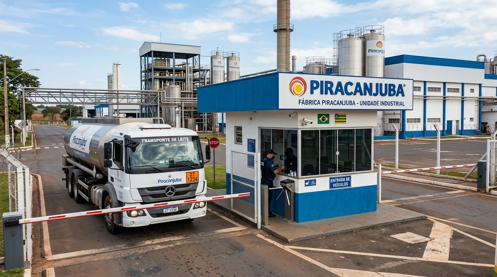
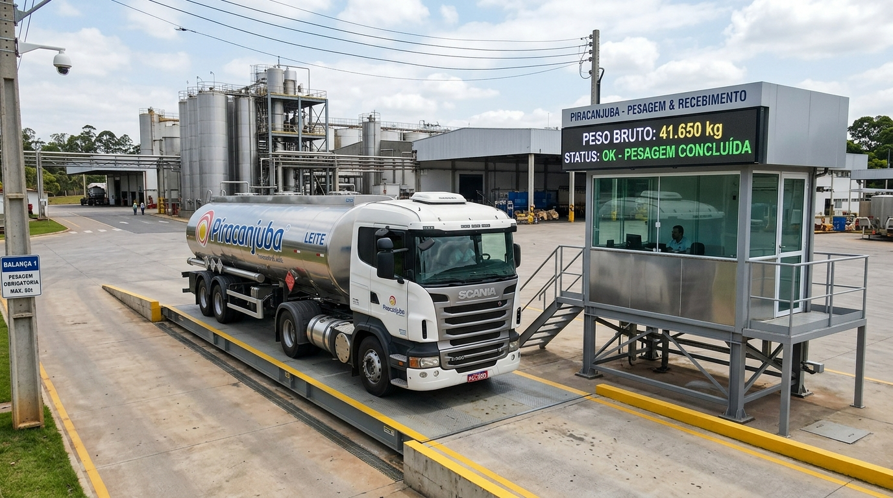
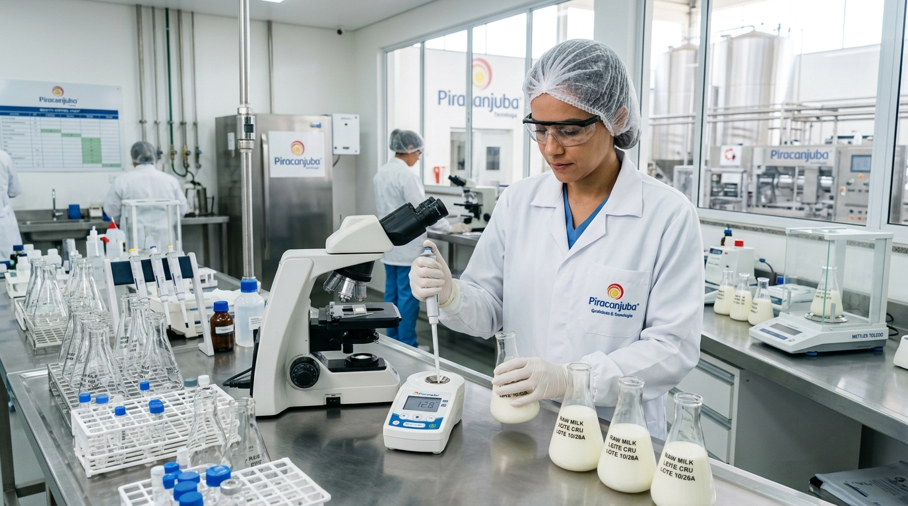
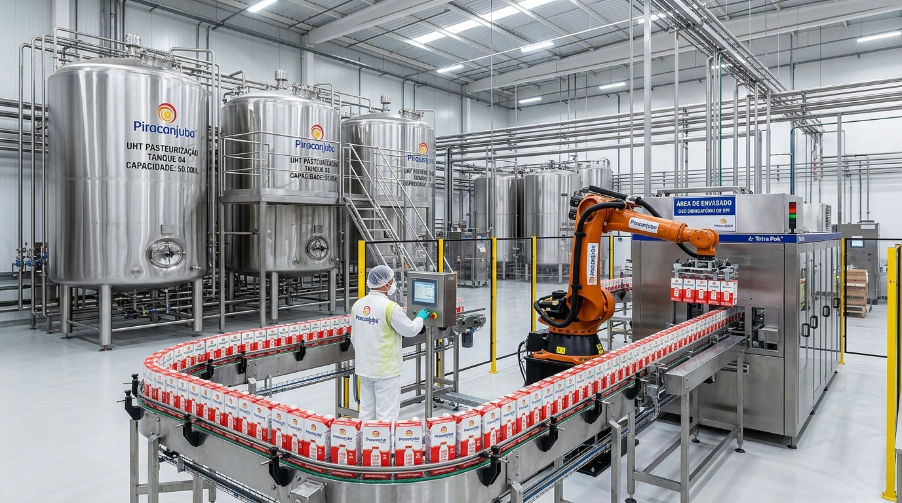
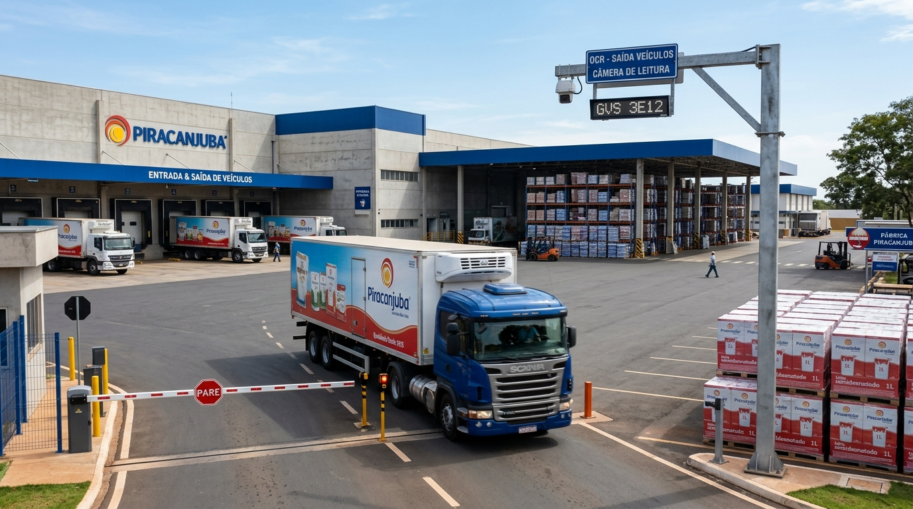

Painel Executivo Piracanjuba Teto: 2.000.000 L / Dia
Gestão inteligente de turnos (24h), tempos médios de processo e rastreabilidade total.

1. RECEPÇÃOPortaria
Câmera OCR, rota do caminhão e motorista.

2. PESAGEMBalança
Pesagem bruta, tara e volume calibrado.

3. QUALIDADELaboratório IA
Físico-química, alizarol e aprovação IA.

4. PRODUÇÃOUHT & Envase
Silos, pasteurização, UHT e máquinas assépticas.

5. EXPEDIÇÃOExpedição
Câmera de saída, lacre e bloqueio final da carga.
Tempo Médio do Caminhão por Turno
MinutosMédia de permanência total (Entrada até Saída de fábrica).
Tempo Médio por Categoria Operacional
MinutosGargalo identificado no Laboratório (área crítica de análise).
Balanço de Qualidade do Leite
VolumeTaxa de aprovação, retenção e expedição de caixinhas.
Relatórios de Produtividade dos Turnos (Ciclos de 8 Horas)
Relatório de Cargas Recusadas (Auditoria Legal & Sanitária)
Inalterável • Conformidade MAPACargas reprovadas pelo Laboratório IA por desvio de acidez, teste de alizarol ou crioscopia. Registro obrigatório com destinação de efluente.
| Data / Hora | Placa | Motorista | Volume Rejeitado | Motivo da Recusa (Laudo IA) | Destinação Legal do Efluente | Status |
|---|
Rastreamento ao Vivo de Placas de Caminhões
| Placa Veículo | Motorista Responsável | Fazenda Origem | Volume | Etapa Atual no Processo | Bloqueio / Saída | Ação |
|---|
1. Recepção & Portaria Inteligente
Monitoramento por IA de câmera OCR, rota do veículo e identificação biométrica do motorista.
Rota & Telemetria do Veículo
Motorista Identificado
O porteiro registra a chegada. A pesagem exata é aferida na Balança Rodoviária a seguir.
2. Balança Rodoviária & Pesagem
Aferição de peso bruto, tara e volume líquido em conformidade com o recebimento de leite cru.
Validação Inteligente Piju
Selecione um caminhão para aferir os dados telemétricos de pesagem.
3. Laboratório de Qualidade • Análise Crítica
Avaliação físico-química e microbiológica obrigatória antes da liberação para descarga.
Parecer Analítico IA Piju v2.4
4. Produção, UHT & Envase Asséptico
Genealogia completa do processamento do leite cru autorizado até o produto acabado.
5. Expedição & Saída de Veículos
Câmera OCR de saída de fábrica, emissão do lacre de expedição e bloqueio final da rastreabilidade.
Segundo Cérebro (Grafo)
Rede de rastreabilidade imutável inspirada no Obsidian.